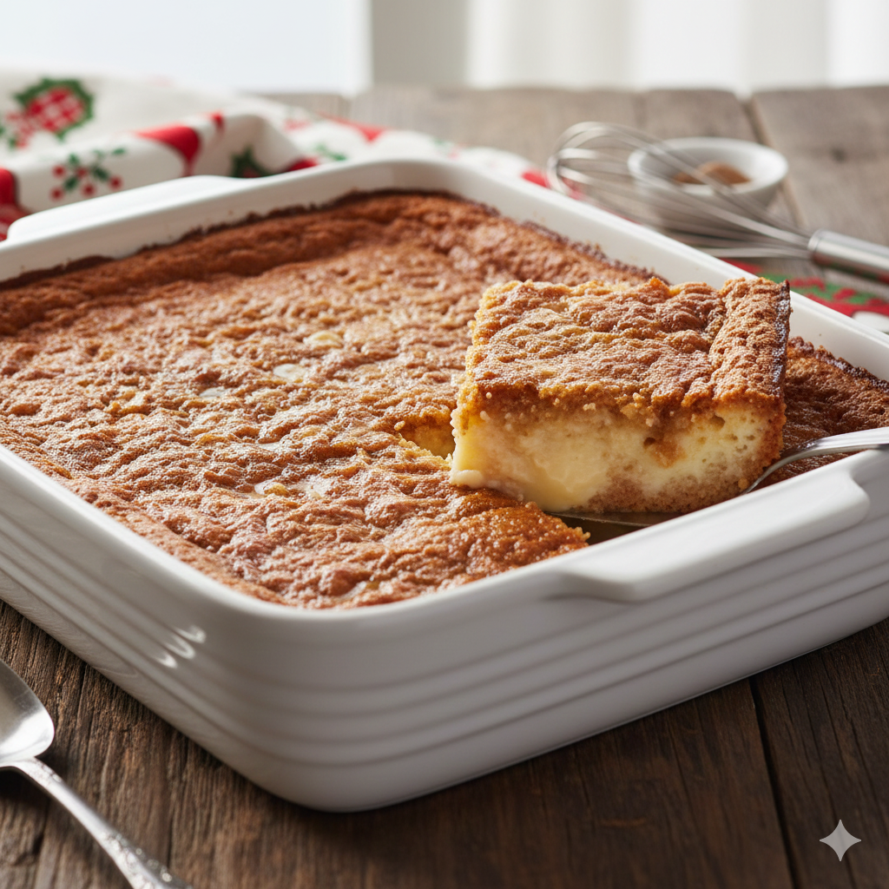

Dump Cake

Description
This Eggnog Dump Cake is a warm, cozy dessert featuring a golden-brown, bubbly crust.Because it’s made by layering eggnog and cake mix without stirring, the result is a rich, pudding-like center topped with a buttery, crisp surface. It’s a perfect festive treat that balances the spiced creamy flavor of eggnog with the fluffy texture of a classic cake.
Ingredients
- 3 cups eggnog
- 1 box white or yellow mix
- 1/2 cup butter, cut into small pieces
- Whipped topping, for serving (optional)
Steps
- Preheat the oven to 350 degrees F (180 degrees C). Grease a 9x13-inch baking dish.
- Pour 1/3 of the eggnog into the prepared dish. Sprinkle cake mix evenly over eggnog. Pour remaining eggnog evenly over the top of cake mix. No need to stir!
- Distribute pieces of butter evenly on top.
- Bake in the preheated oven until golden brown and bubbly, 45 to 50 minutes.
Home